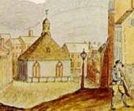
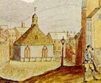

Dutch Reformed Church Frequently used engraving of the church that sat in the middle of the intersection of State Street and Broadway until it was removed in 1806. It is most often remembered by the term "The First Church" in Albany. Virtually all of the known renderings of this building are based on this image of unknown origins.

 
 
notes
While it may well have been the "first and certainly the foremost congregation in the city," it was not the first church building as at least two predecessors were Reformed houses of worship in Albany prior to 1715.
Home | Site Index | Navigation | Email | New York State Museum
first posted: 1999, recast and last revised 12/31/11